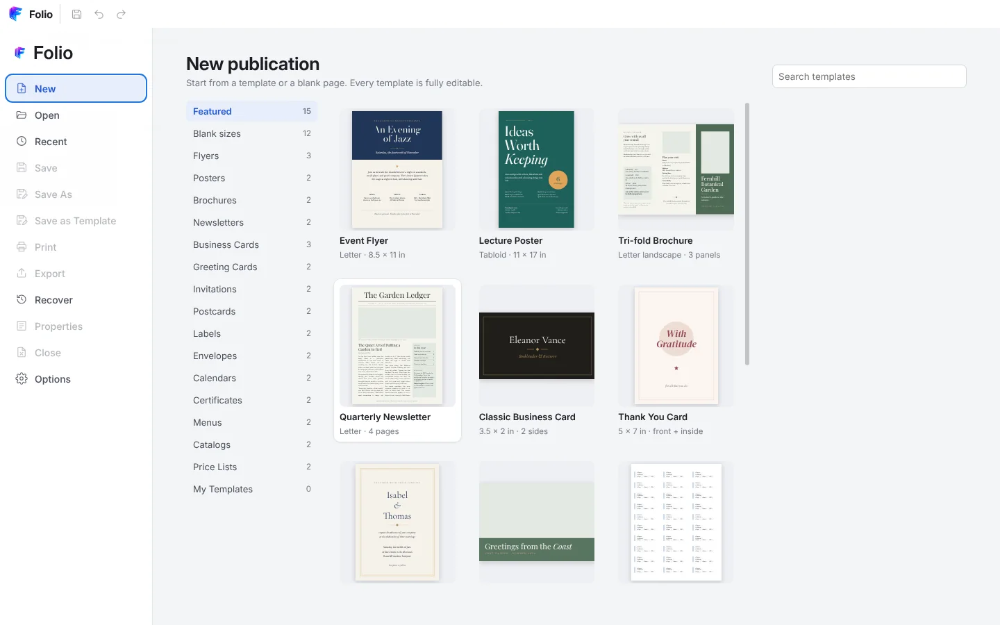
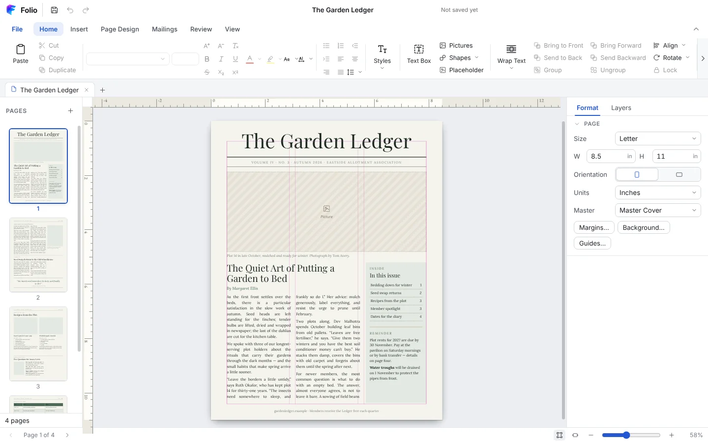

01
Start from a template
41 fully editable templates in 15 categories — flyers, newsletters, brochures, cards, labels, calendars and more. Pick a colour and font scheme, or save your own designs as templates.

Desktop publishing · Windows & Mac
Flyers, newsletters, brochures, cards, calendars and posters — laid out in a clean ribbon workspace with 41 editable templates, real mail merge and print-ready PDF.

41 fully editable templates in 15 categories — flyers, newsletters, brochures, cards, labels, calendars and more. Pick a colour and font scheme, or save your own designs as templates.

Linked text boxes carry a story across columns and pages. Text wraps around pictures and shapes — square, tight or top and bottom — and updates as you move things.

Spell check as you type in 85 proofing languages, with right-to-left text.
Crop, recolour and adjust photos; 24 shapes with gradients, outlines and shadows.
Merge CSV, Excel or OpenDocument lists into letters, labels and cards — or one PDF each.
Vector PDF with embedded fonts, PNG/JPEG up to 600 dpi, bleed, crop marks and booklets.
Free. Choose the installer for your computer.
Folio-Publisher-Setup file..folio files.